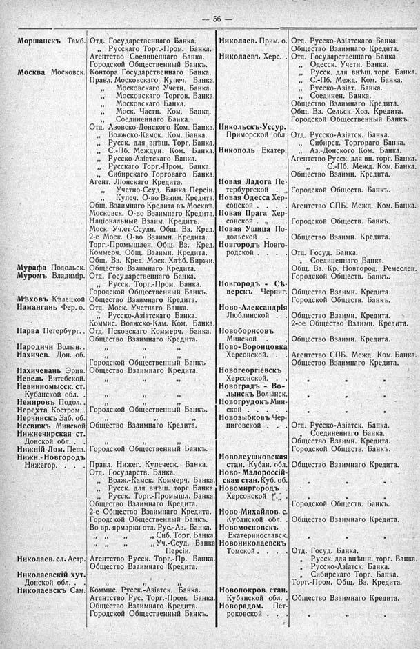

Лист источника 102
Скан

Распознанный текст
-- 56 --
Моршанскъ Тамб. Отд. Государственнаго Банка.
,, Русскаго Торг.-Пром. Банка.
Агентство Соединеннаго Банка.
Городской Общественный Банкъ.
Москва Московск. Контора Государственнаго Банка.
Правл. Московскаго Купеч. Банка.
,, Московскаго Учетн. Банка.
,, Московскаго Торгов. Банка.
,, Московскаго Банка.
,, Моск. Частн. Ком. Банка.
,, Соединеннаго Банка.
Отд. Азовско-Донского Ком. Банка.
,, Волжско-Камск. Ком. Банка.
,, Русск. для внѣш. Торг. Банка.
,, С.-Пб. Междун. Ком. Банка.
,, Русско-Азіатскаго Банка.
,, Русскаго Торг.-Пром. Банка.
,, Сибирскаго Торговаго Банка.
Агент. Ліонскаго Кредита.
,, Учетно-Ссуд. Банка Персіи.
,, Купеч. О-во Взаим. Кредита.
Общ. Взаимнаго Кредита въ Москвѣ.
Московск. О-во Взаимнаго Кредита.
Національный Взаим. Кредитъ.
Моск. Уч.ет-Ссудн. Общ. Вз. Кред.
2-е Моск. О-во Взаимн. Кредита.
Торг.-Промышлен. Общ. Вз. Кред.
Коммерч. Общ. Взаимн. Кредита.
Общ. Вз. Кред. Моск. Хлѣб. Биржи.
Мурафа Подольск. Общество Взаимнаго Кредита.
Муромъ Владимір. Отд. Государственнаго Банка.
,, Русск. Торг.-Пром. Банка.
Городской Общественный Банкъ.
Мѣховъ Кѣлецкой Общество Взаимнаго Кредита.
Наманганъ Фер. о. Отд. Моск. Учетнаго Банка.
,, Русско-Азіатскаго Банка.
Коммис. Волжско-Кам. Ком. Банка.
Нарва Петербург. Отд. Псковскаго Коммерч. Банка.
Общество Взаимнаго Кредита.
Народичи Волын. ,, ,, ,,
Нахичев. Дон. об. ,, ,, ,,
Городской Общественный Банкъ
Нахичевань Эрив. Общество Взаимнаго Кредита.
Невель Витебской. ,, ,, ,,
Невинномысск. ст.
Кубанской обл. ,, ,, ,,
Немировъ Подол. ,, ,, ,,
Нерехта Костром. Городской Общественный Банкъ.
Нерчинскъ Заб. об. ,, ,, ,,
Несвижъ Минской Общество Взаимнаго Кредита.
Нижнечирская ст.
Донской обл. ,, ,, ,,
Нижній-Лом. Пенз. Городской Общественный Банкъ.
Нижн.-Новгородъ
Нижегор. Правл. Нижег. Купеческ. Банка.
Отд. Государств. Банка.
,, Волж.-Камск. Коммерч. Банка.
,, Русск. для внѣш. торг. Банка.
,, Русск. Торг.-Промышл. Банка.
Общество Взаимнаго Кредита.
2-е Общество Взаимнаго Кредита.
Городской Общественный Банкъ.
Во вр. ярмарки отд. Рус.-Аз. Банка.
,, ,, ,, Сиб. Торг. Банка.
,, ,, ,, ,, Уч.-Ссуд. Банка
Персіи.
Николаев. сл. Астр. Агентство Русск. Торг.-Пр. Банка.
Общество Взаимнаго Кредита.
Николаевскій хут.
Донской обл. ,, ,, ,,
Николаевскъ Сам. Коммис. Русск.-Азіатск. Банка.
Агентство Рус. Торг.-Пром. Банка.
Общество Взаимнаго Кредита.
Городской Общественный Банкъ.
Николаев. Прим. о. Отд. Русско-Азіатскаго Банка.
Общество Взаимнаго Кредита.
Николаевъ Херс. Отд. Государственнаго Банка.
,, Одесск. Учетн. Банка.
,, Русск. для внѣш. торг. Банка.
,, С.-Пб. Межд. Ком. Банка.
,, Русско-Азіат. Банка.
,, Соединен. Банка.
Общество Взаимнаго Кредита.
Общ. Вз. Сельск.-Хоз. Кредита.
Городской Общественный Банкъ.
Никольскъ-Уссур.
Приморской обл. Отд. Русско-Азіатск. Банка.
,, Сибирск. Торговаго Банка.
Никополь Екатер. ,, Аз.-Донского Ком. Банка.
Агентство Русск. для вн. торг. Банка.
,, С.-Пб. Межд. Ком. Банка.
Общество Взаимн. Кредита.
Новая Ладога Пе-
тербургской Городской Обществ. Банкъ.
Новая Одесса Хер-
сонской Агентство СПБ. Межд. Ком. Банка.
Новая Прага Хер-
сонской Городской Обществ. Банкъ.
Новая Ушица По-
дольской Общество Взаимн. Кредита.
Новгородъ Новго-
родской Отд. Госуд. Банка.
,, Соединеннаго Банка.
Общ. Вз. Кр. Новгород. Ремеслен.
Городской Обществ. Банкъ.
Новгородъ - Сѣ-
верскъ Черниг. Общество Взаимн. Кредита.
Городской Обществ. Банкъ.
Ново-Александрія
Люблинской Общество Взаимн. Кредита.
2-ое Общество Взаимн. Кредита.
Новоборисовъ
Минской Общество Взаимн. Кредита.
Ново-Воронцовка
Херсонской. Агентство СПБ. Межд. Ком. Банка.
Общество Взаимнаго Кредита.
Новогеоргіевскъ
Херсонской. ,, ,, ,,
Новоградъ - Во-
лынскъ Волынск. ,, ,, ,,
Новогрудокъ Мин-
ской ,, ,, ,,
Новозыбковъ Чер-
ниговской Отд. Русско-Азіатск. Банка.
,, Соединеннаго Банка.
Общество Взаимн. Кредита.
Городской Обществ. Банкъ.
Новолеушковская
стан. Кубан. обл. Общество Взаимнаго Кредита.
Ново-Малороссій-
ская стан. Куб. об. ,, ,, ,,
Новомиргородъ
Херсонской ,, ,, ,,
Городской Обществ. Банкъ.
Ново-Михайлов. с.
Кубанской обл. Общество Взаимнаго Кредита.
Новомосковскъ
Екатеринославск. ,, ,, ,,
Новониколаевскъ
Томской Отд. Госуд. Банка.
,, Русск. для внѣшн. торг. Банка.
,, Русско-Азіатск. Банка.
,, Сибирскаго Торг. Банка.
Торг.-Пром. Общ. Вз. Кредита.
Новопокров. стан.
Кубанской обл. Общество Взаимнаго Кредита.
Новорадом. Пет-
роковской ,, ,,